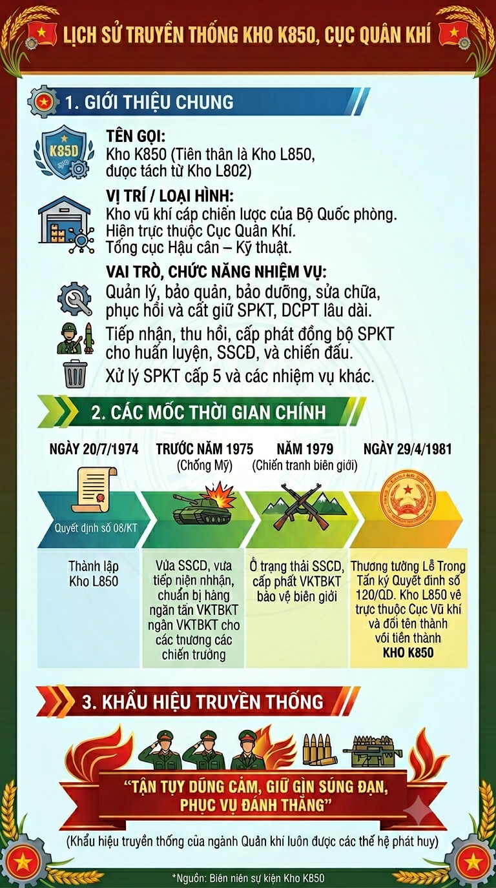

Kho K850 là kho vũ khí, trong loại hình kho cấp chiến lược của Bộ Quốc Phòng, được thành lập ngày 20/7/1974 theo Quyết định số 08/KT của Thủ trưởng Tổng cục Kỹ thuật, tiền thân là Kho L850 được tách ra từ kho vũ khí, khí tài thuộc Kho L802 (tức Kho K802 ngày nay).
Do tính chất nhiệm vụ, yêu cầu tổ chức quân đội và chủ trương quy hoạch kho tàng của ngành kỹ thuật Quân khí trong những năm đầu giải phóng, ngày 29/4/1981, Thượng tướng Lê Trọng Tấn, Thứ trưởng Bộ Quốc phòng ký Quyết định số 120/QĐ về tổ chức biên chế Tổng cục Kỹ thuật, theo đó Cục quản lý vũ khí - khí tài - đạn dược, được tách làm 02 Cục: gồm Cục vũ khí và Cục đạn dược, Kho L850 về trực thuộc Cục vũ khí, và được đổi tên thành Kho K850 từ năm 1981 đến nay.
Kho K850 có chức năng nhiệm vụ: Tổ chức quản lý, bảo quản, bảo dưỡng, sửa chữa, phục hồi các loại SPKT; tiếp nhận, thu hồi, cấp phát SPKT cho các đơn vị trong toàn quân làm nhiệm vụ huấn luyện, SSCĐ và chiến đấu; bảo đảm vũ khí phục vụ diễu binh, diễu hành của các lực lượng vũ trang nhân dân; tổ chức xử lý SPKT cấp 5 và thực hiện các nhiệm vụ khác theo mệnh lệnh trên giao.
Kho đóng quân trên địa bàn khu vực phía Bắc, điều kiện thời tiết, khí hậu, môi trường tuy có nhiều thuận lợi đối với đời sống, sinh hoạt của nhân dân. Nhưng địa hình, địa bàn còn nhiều cách trở và phức tạp; hạ tầng giao thông còn gặp rất nhiều khó khăn; tình hình kinh tế, chính trị, văn hóa xã hội còn nghèo, chậm phát triển; ANCT, TTATXH còn nhiều diễn biến phức tạp, khó lường. Trải qua 50 năm xây dựng và trưởng thành, các thế hệ cán bộ, chiến sỹ, QNCN, CNVQP của kho luôn đoàn kết, chung sức đồng lòng; chủ động khắc phục mọi khó khăn; nêu cao ý chí, tự lực, tự cường, phát huy truyền thống của ngành Quân khí “Tận tụy dũng cảm, giữ gìn súng đạn, phục vụ đánh thắng”, thi đua hoàn thành xuất sắc mọi nhiệm vụ được giao.
Ra đời trong bối cảnh cả nước đang tập trung tất cả sức người, sức của cho cuộc kháng chiến chống Mỹ cứu nước, giải phóng Miền Nam đã là một thách thức khó khăn, nhưng khó khăn hơn cả là: Tổ chức lực lượng, hệ thống chỉ huy các cấp còn rất non trẻ; biên chế quân số còn thiếu hụt, trình độ chuyên môn nghiệp vụ của cán bộ, chiến sỹ, QNCN, CNVQP còn thấp; hệ thống cơ sở vật chất, kho tàng, doanh trại, nhà xưởng 100% là lán trại tạm và ở phân tán trong các khu đồi núi hoang sơ. Song, quán triệt chủ trương, đường lối cách mạng của đảng, tất cả vì Miền Nam ruột thịt, vì mục tiêu độc lập, dân tộc gắn liền với CNXH, đồng thời quán triệt, nhận thức sâu sắc lời dạy của Chủ tịch Hồ Chí Minh: “Vũ khí là mồ hôi, nước mắt của đồng bào, là xương máu của bộ đội vì vậy phải quý trọng nó, phải tiết kiệm, ngăn nắp, phải sử dụng hợp lý”; cán bộ, chiến sỹ, QNCN, CNVQP Kho K850 đã chủ động, tích cực, nhanh chóng ổn định tình hình tư tưởng, tổ chức, biên chế; củng cố, xây dựng cơ sở vật chất, kho tàng; triển khai thực hiện nhiệm vụ theo đúng mệnh lệnh trên giao.
Trong giai đoạn này, vừa sẵn sàng chiến đấu và phục vụ chiến đấu; nhiệm vụ tiếp nhận, cấp phát, thu hồi, bảo quản, bảo dưỡng, sửa chữa các loại VKTBKT của kho được đặt ra rất nặng nề. Nhưng với tinh thần chủ động tiến công, làm việc quên mình, không quản ngày đêm, nắng nóng, giá rét, cán bộ, chiến sĩ, QNCN, CNVQP trong toàn kho đã tiếp nhận, thu hồi hàng ngàn tấn VKTBKT từ nguồn viện trợ của các nước bạn và cả trong chiến tranh; cùng với đó chuẩn bị hàng ngàn tấn VKTBKT bảo đảm cấp phát kịp thời, đồng bộ cho các chiến trường phía Nam, Quân khu IV và nước bạn Lào, Camphuchia, bảo đảm an toàn, góp phần cùng toàn Đảng, toàn quân và toàn dân ta giải phòng hoàn toàn Miền Nam thống nhất đất nước.
Sau ngày Miền Nam hoàn toàn giải phóng, thống nhất đất nước và trước yêu cầu nhiệm vụ mới của ngành kỹ thuật quân khí đặt ra. Nhiệm vụ của kho lúc này tiếp tục tập trung vào việc củng cố tổ chức lực lượng; ổn định chính trị, tư tưởng; chăm lo đời sống bộ đội, xây dựng kho tàng để tiếp nhận VKTBKT của các nước viện trợ; chuẩn bị lực lượng, cơ sở vật chất, tổ chức thu hồi VKTBKT sau chiến tranh từ các đơn vị; thực hiện bảo quản, bảo dưỡng, sửa chữa để dự trữ lâu dài, phục vụ nhiệm vụ huấn luyện, SSCĐ và chiến đấu của các lực lượng vũ trang nhân dân.
Chiến tranh và hòa bình là quy luật tất yếu, nhưng không ai mong muốn, năm 1979 chiến tranh biên giới phía Bắc và biên giới Tây Nam nổ ra. Kho L850 được đặt trong trạng thái sẵn sàng chiến đấu và phục vụ chiến đấu theo mệnh lệnh của Cục; kho đã chủ động phối hợp và cùng với các đơn vị tổ chức cấp phát hàng ngàn tấn VKTBKT, phục vụ kịp thời cho các đơn vị làm nhiệm vụ chiến đấu và SSCĐ, bảo vệ vững chắc biên giới Tổ quốc. Giai đoạn này, cùng với nhiệm vụ sẵn sàng chiến đấu và phục vụ chiến đấu cho biên giới phía Bắc và Tây Nam; kho cũng đặt ra những yêu cầu mới, trong đó tập trung giáo dục, huấn luyện, bồi dưỡng, không ngừng nâng cao nhận thức chính trị, trình độ chuyên môn nghiệp vụ, khả năng SSCĐ cho đội ngũ cán bộ, nhân viên để bổ sung, kiện toàn tổ chức lực lượng, đáp ứng yêu cầu nhiệm vụ được giao trong điều kiện đất nước vừa có hòa bình, vừa có chiến tranh.
Trong thời kỳ CNH, HĐH đất nước, mà đặc biệt là trong những năm gần đây; thực hiện chủ trương, đường lối đổi mới của Đảng, nhiệm vụ cách mạng; nhiệm vụ quân sự, quốc phòng - an ninh; Chiến lược bảo vệ Tổ quốc trong tình hình mới và yêu cầu xây dựng quân đội cách mạng, chính quy, tinh nhuệ, từng bước hiện đại. Được sự quan tâm, đầu tư toàn diện của trên, kho đã có bước phát triển, thay đổi nhanh chóng, từng bước khảng định được vị thế của kho trong ngành kỹ thuật Quân đội nói chung và ngành kỹ thuật quân khí nói riêng, trong đó: Khu kỹ thuật, nhà xưởng, hệ thống nhà kho cất giữ SPKT, DCPT được quy hoạch, cải tạo, xây mới hoàn toàn theo quy chuẩn mẫu nhà kho mới, bảo đảm kiên cố, an toàn; thực hiện việc sắp xếp, quản lý hàng hóa khoa học, thống nhất, chính quy. Hệ thống trang thiết bị, dây chuyền công nghệ nhà xưởng được đầu tư đồng bộ, tiên tiến; cùng với đó, trình độ chuyên môn nghiệp vụ của đội ngũ cán bộ, nhân viên kỹ thuật không ngừng được nâng cao, năng lực thực hiện nhiệm vụ chuyên môn kỹ thuật của đội ngũ cán bộ, nhân viên từng bước đáp ứng yêu cầu nhiệm vụ công tác kỹ thuật quân khí trong tình hình mới.
With sự đầu tư đó, hằng năm kho tổ chức bảo quản, bảo dưỡng, sửa chữa và đưa vào quản lý, cất giữ lâu dài hàng trăm tấn SPKT, DCPT các loại; bảo đảm sẵn sàng cấp phát, tiếp nhận đồng bộ hàng trăm tấn SPKT, DCPT cho các đơn vị làm nhiệm vụ huấn luyện, chiến đấu và SSCĐ trong toàn quân. Các chỉ tiêu, kế hoạch công tác bảo đảm kỹ thuật trên giao hằng năm, đơn vị đều tổ chức thực hiện hoàn thành 100%, đúng tiến độ, bảo đảm chất lượng, yêu cầu kỹ thuật, mỹ thuật. Thường xuyên quán triệt, thực hiện có hiệu quả Nghị quyết 382 (nay là Nghị quyết 1656 của Quân ủy Trung ương) về “Lãnh đạo công tác kỹ thuật đến năm 2030 và những năm tiếp theo”, Chỉ thị 96 của Bộ Quốc phòng “Về bảo đảm an toàn kho vũ khí đạn dược”, gắn với Cuộc vận động “Quản lý, khai thác VKTBKT, tốt, bền, an toàn, tiết kiệm và an toàn giao thông”.
Tình hình chính trị, tư tưởng cán bộ, chiến sỹ đơn vị luôn ổn định, tin tưởng tuyệt đối vào sự lãnh đạo của Đảng và công cuộc đổi mới đất nước; chấp hành tốt mọi chủ trương, đường lối, chính sách của Đảng, pháp luật nhà nước; không giao động quan điểm, lập trường trước những khó khăn, thách thức; luôn thể hiện rõ tinh thần đoàn kết, thống nhất nội bộ; ý chí quyết tâm, phấn đấu vươn lên hoàn thành thắng lợi mọi nhiệm vụ được giao. Chủ động nêu cao tinh thần cảnh giác cách mạng, phòng gian, giữ bí mật; đấu tranh làm thất bại mọi âm mưu phá hoại của các thế lực thù địch, phản động, tiêu cực, giữ vững đơn vị, địa bàn an toàn về chính trị. Thường xuyên thực hiện tốt công tác dân vận, xây dựng mối quan hệ mật thiết, đoàn kết quân dân và công tác chính sách hậu phương trên địa bàn đóng quân.
Không ngừng củng cố, xây dựng đơn vị vững mạnh về tổ chức, ổn định biên chế lực lượng, nâng cao năng lực chỉ huy, quản lý ở các cấp, bảo đảm SSCĐ cao trong mọi tình huống. Duy trì tốt nền nếp, chế độ công tác, xây dựng chính quy, rèn luyện kỷ luật, bảo đảm ATGT; kết hợp chặt chẽ Phương châm “Cơ bản, thiết thực, vững chắc, chuyên sâu” trong tổ chức huấn luyện, bồi dưỡng, đào tạo; đến nay 100% cán bộ, nhân viên làm công tác chuyên môn kỹ thuật, nghiệp vụ quân sự đều được đào tạo cơ bản, đáp ứng yêu cầu nhiệm vụ trong tình hình mới.
Công tác hậu cần, đời sống trong những năm qua được quan tâm đầu tư toàn diện và từng bước cải thiện, đáp ứng nhu cầu đời sống bộ đội, phù hợp với xu thế xây dựng quân đội và sự phát triển của toàn xã hội; từ cơ sở vật chất, nhà ở bộ đội, nhà làm việc, các công trình công cộng, cảnh quan, môi trường... bảo đảm đồng bộ và được củng cố, tân trang thường xuyên, thể hiện rõ được Bức tranh “Doanh trại chính quy, sáng, xanh, sạch đẹp”. Các chế độ, chính sách, tiêu chuẩn hậu cần, thu nhập ngoài lương hằng năm không ngừng được cải thiện cả về số lượng và chất lượng; điều kiện thăm, khám, chăm sóc sức khỏe bộ đội được quan tâm đầy đủ, kịp thời hơn.
Về tổ chức Đảng, từ một chi bộ được thành lập ban đầu, đến nay đã phát triển thành một Đảng bộ cơ sở, với 12 chi bộ trực thuộc, hơn 180 đảng viên; năng lực lãnh đạo và sức chiến đấu của đội ngũ cán bộ, đảng viên trong toàn đảng bộ không ngừng lớn mạnh, lực lượng này đang là nòng cốt trong xây dựng Đảng bộ vững mạnh về chính trị, tư tưởng, tổ chức, đạo đức và cán bộ, thực hiện thắng lợi nhiệm vụ chính trị và xây dựng kho vững mạnh toàn diện “Mẫu mực, tiêu biểu”. Nhiều năm liên tục Đảng bộ được đánh giá hoàn thành tốt và hoàn thành xuất sắc nhiệm vụ, không có chi bộ yếu kém; 100% đảng viên đều hoàn thành nhiệm vụ, trong đó có 90% trở lên đảng viên hoàn thành tốt và hoàn thành xuất sắc nhiệm vụ.
Thành tích đó đã được nhà nước ghi nhận và tặng thưởng 04 Huân chương Bảo vệ Tổ quốc hạng Ba; Bộ Quốc phòng tặng cờ thưởng luân lưu 3 năm liên tục (từ 1976 đến 1978); Tổng cục Kỹ thuật, Cục Quân khí; các ngành, nghề, lĩnh vực công tác trong và ngoài quân đội; UBND tỉnh Hoà Bình, UBND huyện Tân Lạc tặng nhiều phần thưởng và danh hiệu khác; hàng nghìn lượt tập thể, cá nhân được tặng thưởng các danh hiệu thi đua. Riêng trong giai đoạn 2019 - 2023 kho được tặng thưởng 02 cờ thi đua và 01 Danh hiệu “Đơn vị quyết thắng” của Tổng cục Kỹ thuật. Vinh dự hơn là nhân dịp Kỷ niệm 50 năm ngày truyền thống đơn vị, ngày 25/10/2023, Chủ tịch nước Cộng hòa XHCNVN đã ký Quyết định số 1269/QĐ-CTN, tặng thưởng Huân chương Bảo vệ Tổ quốc hạng Ba cho Kho K850: Vì đã có thành tích xuất sắc trong huấn luyện, phục vụ chiến đấu, xây dựng lực lượng QĐND, củng cố quốc phòng góp phần vào xây dựng CNXH và BVTQ từ năm 2018 đến năm 2022.
Trong những năm tới, tình hình thế giới, khu vực và trong nước dự báo tiếp tục diễn biến phức tạp, khó lường; cùng với việc quán triệt, triển khai thực hiện Nghị quyết số 05 của Bộ Chính trị, Nghị quyết số 230 của Quân ủy Trung ương về tổ chức Quân đội nhân dân Việt Nam giai đoạn 2021 - 2030 và những năm tiếp theo, đặt ra nhiều yêu cầu mới cho nhiệm vụ xây dựng và bảo vệ Tổ quốc. Trong đó, công tác kỹ thuật quân khí tiếp tục có sự phát triển mới, đó là nhiệm vụ bảo đảm trang bị kỹ thuật, bảo đảm an toàn, đồng bộ súng pháo, khí tài, đạn dược phục vụ nhiệm vụ huấn luyện, sẵn sàng chiến đấu và chiến đấu thắng lợi của các lực lượng vũ trang nhân dân là yêu cầu cấp thiết.
Vì vậy, các thế hệ cán bộ, chiến sỹ, QNCN Kho K850 hôm nay, hơn lúc nào hết phải phấn đấu nhiều hơn nữa; phải luôn thấm nhuần lời dạy của Chủ tịch Hồ Chí Minh “Vũ khí là mồ hôi, nước mắt của đồng bào, là xương máu của bộ đội. Vì vậy phải quý trọng nó, phải tiết kiệm, ngăn nắp, phải sử dụng hợp lý”. Tiếp tục quán triệt và thực hiện tốt NQTW8, khóa XIII về “Chiến lược bảo vệ Tổ quốc trong tình hình mới”; Nghị quyết 1656 của Quân ủy Trung ương về “Lãnh đạo công tác kỹ thuật đến năm 2030 và những năm tiếp theo”, Chỉ thị 96 của Bộ Quốc phòng “Về bảo đảm an toàn kho vũ khí, đạn dược”, gắn với thực hiện có hiệu quả Cuộc vận động “Quản lý, khai thác VKTBKT, tốt, bền, an toàn, tiết kiệm và an toàn giao thông”.
Phấn đấu thực hiện, hoàn thành thắng lợi Nghị quyết Đại hội Đảng bộ Kho lần thứ XIX, Nghị quyết Đại hội Đảng bộ Cục QK lần thứ XVI, Nghị quyết Đại hội Đảng bộ TCKT lần thứ X, Nghị quyết Đại hội Đảng bộ Quân đội lần thứ XI và Nghị quyết Đại hội Đảng toàn Quốc lần thứ XIII, góp phần thực hiện thắng lợi đường lối chính trị, đường lối quân sự của Đảng; xây dựng Cục Quân khí, Ngành Quân khí không ngừng lớn mạnh và trưởng thành, xây dựng Quân đội cách mạng, chính quy, tinh nhuệ, từng bước hiện đại, đáp ứng yêu cầu, nhiệm vụ bảo vệ Tổ quốc trong tình hình mới, xứng đáng với truyền thống và sự hy sinh, cống hiến của các thế hệ cha anh đi trước.